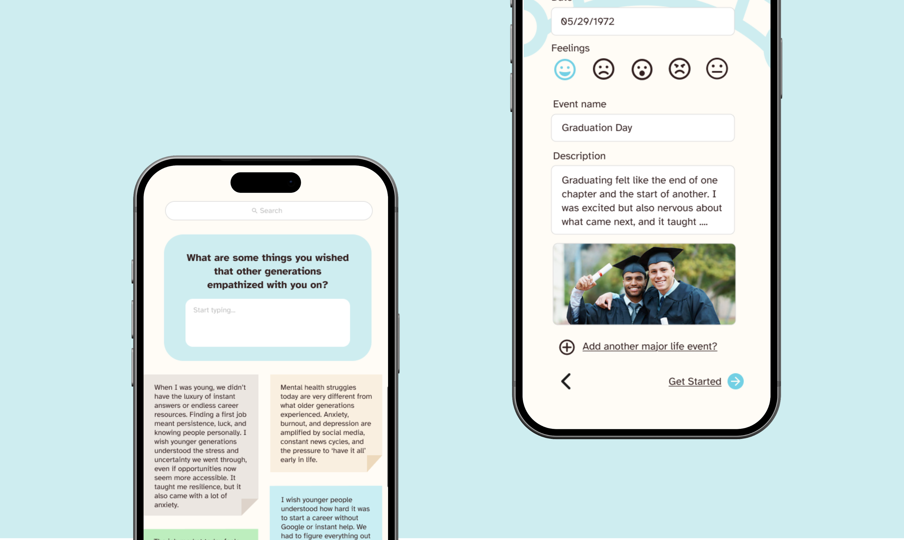
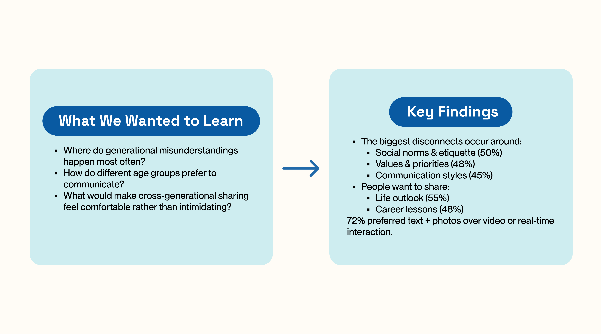
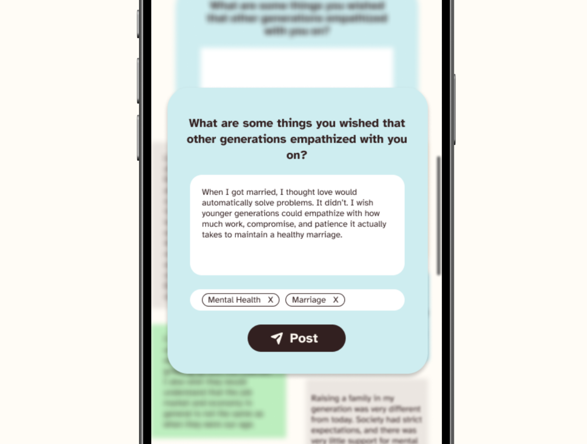
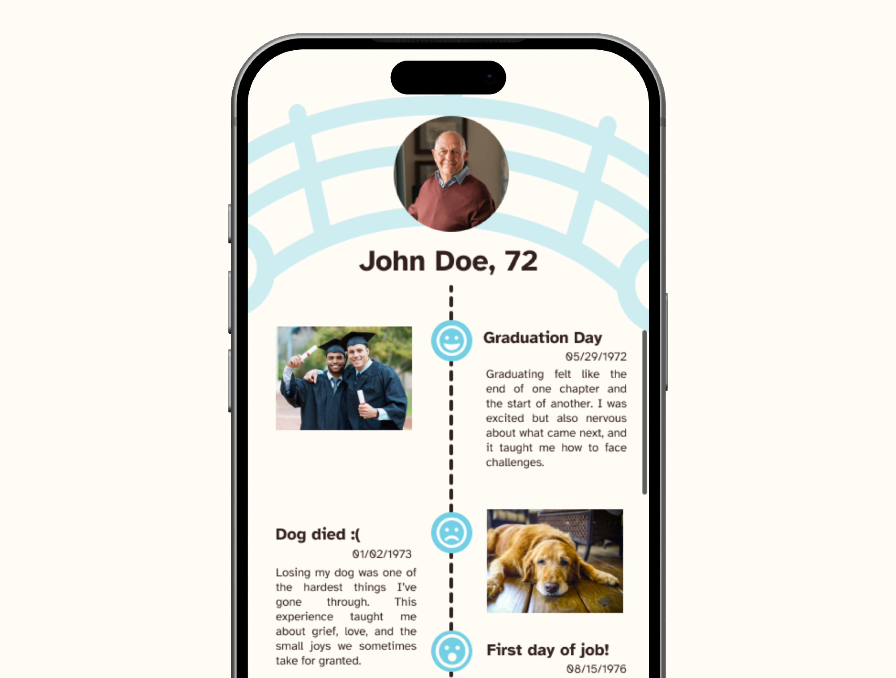
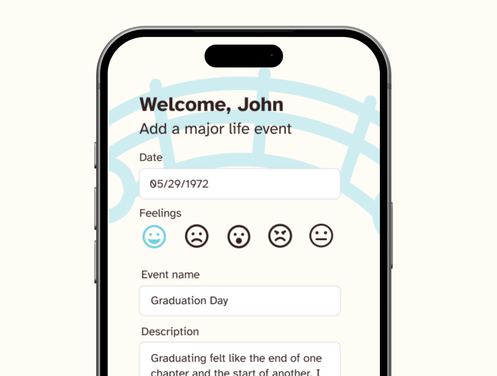
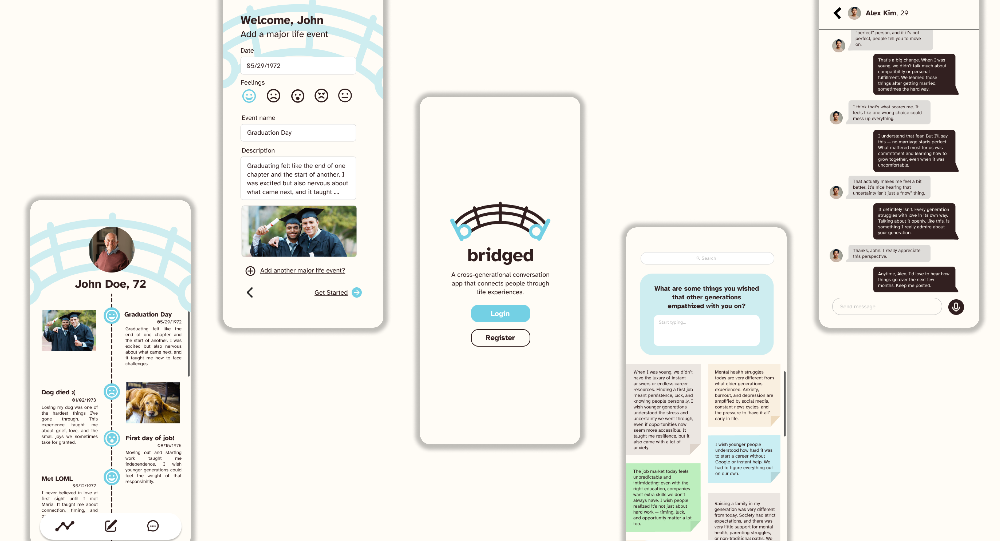

01 Overview
Helping younger and older generations share life experiences, learn from one another, and build empathy through storytelling.
Generations often feel disconnected due to differences in technology,
communication styles, and lived experiences. Existing social platforms
prioritize fast, performative sharing — not thoughtful dialogue.
bridged
aims to solve this by sparking cross-generational conversation, hoping to
make both generations realize they aren’t as different as they think.
02 Context/Problem
Generational disconnect shows up in everyday life.
- Younger people feel older generations don’t understand modern challenges.
- Older generations feel excluded by rapidly changing technology.
- Opportunities for storytelling and listening are rare
These gaps create barriers to belonging, collaboration, and mutual respect. Without intentional spaces for exchange, knowledge, traditions, and lived wisdom are lost — and misunderstandings deepen.
How might we design a digital space that encourages reflection instead of reaction, allowing generations to share stories, compare life journeys, and find common ground?
03 Research
We gathered 65+ responses from:
- Interviews with family members across generations
- Peer discussions and observational insights
- Google Forms survey distributed to community networks (59 responses)
We also conducted secondary research on intergenerational storytelling and communication.

The issue isn’t unwillingness to connect — it’s a lack of structure and opportunity to share experiences meaningfully.
Our secondary research also emphasized the power of storytelling as a tool for connection.
Stories are one of the primary ways humans share values & wisdom, and build belonging.
They allow lessons to be communicated in ways that are relatable across age groups,
creating a bridge between past and present experiences. By helping different generations see
themselves as part of a larger narrative (e.g recognize shared milestones/challenges),
this can strengthen intergenerational bonds.
04 Process
We focused on reducing pressure and guiding participation.
1. Story-First Interaction Model
Instead of open posting (like social media), we introduced guided prompts:
- What is a challenge you wish the other generation understood?
- What tradition shaped your values?
Prompts lowered the barrier for older users unsure what to share.


2. Life Timeline Feature
Users document how they felt during milestones such as:
- Graduation
- Career changes
- Personal turning points
3. Emotionally Lightweight Sharing
We added:- Emoji-based emotional tags
- Simple chronological layouts
This made storytelling expressive but accessible.

05 Solution
Core Features ↗

06 Conclusion
By grounding interaction in storytelling, the design encourages empathy rather
than debate. bridged allows different generations to explore the perspectives of
the other generation, and perhaps make them realize they are not as different as they think.
Generational divides are often framed as value conflicts, but our research showed they are largely
context gaps. Design can surface that context.
Reflection
- Although our team did not place, this designathon taught me a lot, from translating research insights into design concepts to creating design systems.
- We could have experimented more with onboarding flows to reduce hesitation and make the experience a lot easier to adopt, especially for older users.
- This was my very first designathon and I learned a lot about what it’s like to work in a fast-paced, collaborative design environment.